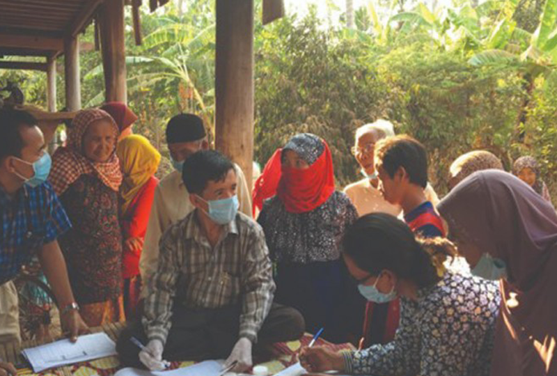

English
|
ខែ្មរ
ប្រព័ន្ធតាមដាន និងវាយតម្លៃ កម្មវិធីជាតិគ្រប់គ្រងជំងឺរបេងនៅកម្ពុជា
កម្មវិធីសិក្សាដោយខ្លួនឯង
ជំហានទី ១ សាកល្បងចំណេះដឹងរបស់អ្នក
ចាប់ផ្តើមដោយ ការវាយតម្លៃខ្លួនឯង គ្រោងឡើងសម្រាប់មន្ត្រីទទួលខុសត្រូវក្នុងការតាមដាន និងវាយតម្លៃកម្មវិធីកំចាត់ជំងឺរបេងនៅកម្ពុជា ឧបករណ៏នេះនឹងជួយអ្នក កំណត់រក កង្វះខាតនៃជំនាញ និង ចំណេះដឹងរបស់អ្នក ។
ចាប់ផ្តើមការវាយតម្លៃ
ជំហានទី ២ បង្កើនចំណេះដឹងរបស់អ្នក
ម៉ូឌុលនៃស្វ័យសិក្សា សម្រាប់ជួយបង្កើនចំណេះដឹង អំពី ការតាមដាននិងវាយតម្លៃ កម្មវិធីរបេង

ម៉ូឌុលទី ១៖ ការតាមដាន និងវាយតម្លៃ កម្មវិធីរបេង
រយៈពេលសិក្សា ប្រមាណ ៤៥ ទៅ ៦០ នាទី
Launch Module 1
ម៉ូឌុលទី ២៖ ការធានាគុណភាព ទិន្នន័យរបេង
រយៈពេលសិក្សា ប្រមាណ ៣០ នាទី
Launch Module 2
ម៉ូឌុលទី ៣៖ ការវិភាគ ការបកស្រាយ និង ការប្រើប្រាស់ ទិន្នន័យរបេង
រយៈពេលសិក្សា ប្រមាណ ៦០ នាទី
Launch Module 3
ជំហានទី ៣ វាយតម្លៃឡើងវិញ នូវចំណេះដឹងរបស់អ្នក
ឥឡូវនេះអ្នកបានបញ្ចប់ម៉ូឌុលនៃការសិក្សាហើយ សូមធ្វើការវាយតម្លៃឡើងវិញ ដើម្បីបញ្ជាក់ថាចំណេះដឹងរបស់អ្នកមានការកើនឡើងឬទេ ។
ចាប់ផ្តើម ការវាយតម្លៃក្រោយសិក្សា
Loading…